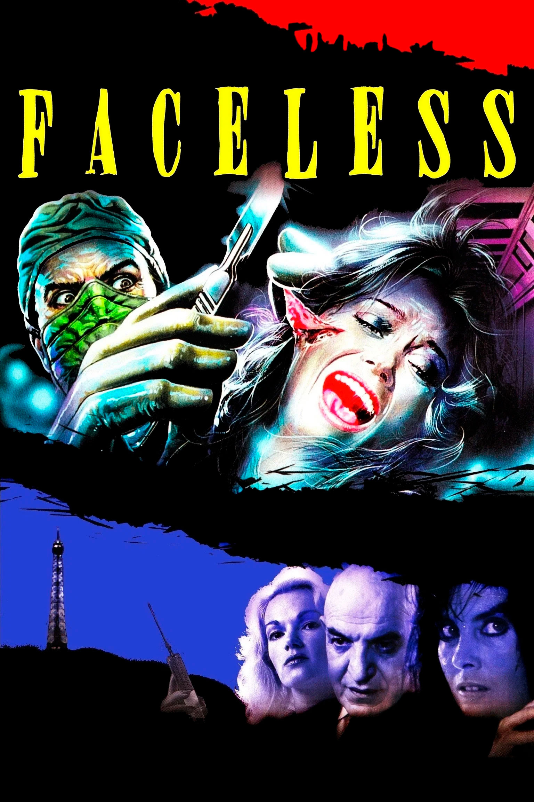

FILMS · EUROPEAN · 1988
Faceless (Português)
“Ce qu’il y a de plus profond chez l’homme, c’est la peau.”
— Paul Valéry
O que há de mais profundo no homem é a pele.
Um rosto vivo dissolve-se na impassibilidade química do ácido. Uma agulha trespassa lentamente um olho emborrachado. A prisioneira, de seios nus, convulsiona em sofrimento lancinante. Eis o poema carnal — de sexo e vísceras — que Jess Franco redige a falso sangue.
É grotesco.
É insano.
É insanamente grotesco.
Quando a modelo Barbara Hallen (Caroline Munro) desaparece nas entranhas de Paris, seu pai, Terry Hallen (Telly Savalas com energia de quem queria estar em outro filme), convoca o detetive Sam Morgan (Christopher Mitchum) para resgatá-la do limbo. A investigação conduz inevitavelmente à clínica do enigmático Dr. Frank Flamand (Helmut Berger), para onde a assistente e amante do médico louco Nathalie (a sempre magnética Brigitte Lahaie) leva jovens incautas seduzidas por sua beleza fatal. Enquanto testemunhas são eliminadas a sangue frio e as pistas revelam lentamente a conspiração atroz, o detetive se aproxima da verdade terrível escondida por trás das paredes.
Faceless é errado em cada detalhe — e certo no conjunto. A prova cabal da harmonia do erro: uma música que não combina com nada do que está acontecendo toca insistentemente embalando seu tom pulp fora de época, o principal traço de sua aura maravilhosamente brega.
Embora flerte com o choque gratuito com um sorriso de cúmplice, Faceless é uma amálgama dissonante entre oitentismo e sessentismo, numa harmonia deliberadamente imperfeita. A superfície do filme — saturada por uma estética de violência que já carrega a contaminação do vídeo doméstico — está consciente de que não inaugura nada, mas contente em desdenhar do "bom gosto" em detrimento do entretenimento selvagem.
Nos anos 1960 o terror branco e preto ainda investia em ruptura, ineditismo e transgressão que pretendia abrir fendas reais na sensibilidade do espectador. Em 1988, a inocência já havia sido deflorada. Faceless sabe que chega tarde à festa, então se veste para uma orgia. E é precisamente essa autoconsciência que o torna profundamente oitentista. O excesso não é mais descoberta; é redundância, espectro de uma violência que já foi inaugural. Contudo, o coração pulsante do filme permanece sessentista. O cientista psicopata, a cirurgia como instrumento do mal, a identidade concebida como algo arrancável e transplantável — tais motivos pertencem ao imaginário do horror europeu dos anos 1960, não ao slasher que dominaria os multiplex dos anos 1980. Franco recupera essa mitologia anatômica não para atualizá-la, mas para reencená-la como fantasma. Seu interesse jamais foi a engenharia narrativa, mas as atmosferas viscosas, as obsessões reiteradas, os corpos convertidos em paisagem.
Eis a ironia maior: um filme sobre a troca de rostos que assume o próprio rosto como máscara tardia do gênero. Se a pele é o que há de mais profundo, Franco filma a superfície como abismo. A pele, arrancada e manipulada, torna-se metáfora e matéria simultaneamente. Ao expor o artifício (o sangue falso, a encenação exacerbada), o cineasta sublinha que a profundidade não está além da superfície, mas nela mesma: na textura da imagem, na viscosidade do sangue, na insistência fetichista sobre o corpo. Faceless, portanto, não é um monumento do horror, tampouco pretende sê-lo. É antes um epitáfio pulp à tradição de gênero europeia, atravessado pela luz de fósforo de um CRT oitentista. Entre ruínas e ecos, Franco filma como quem tateia cadáveres à procura de pulsação. Então, por instantes breves, a pele volta a respirar, e que divertido é!
← Voltar para a adega